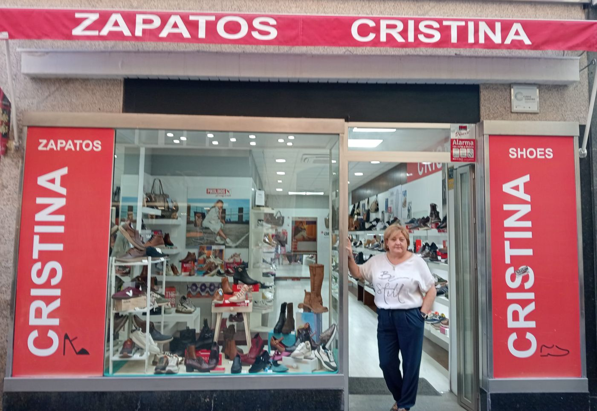
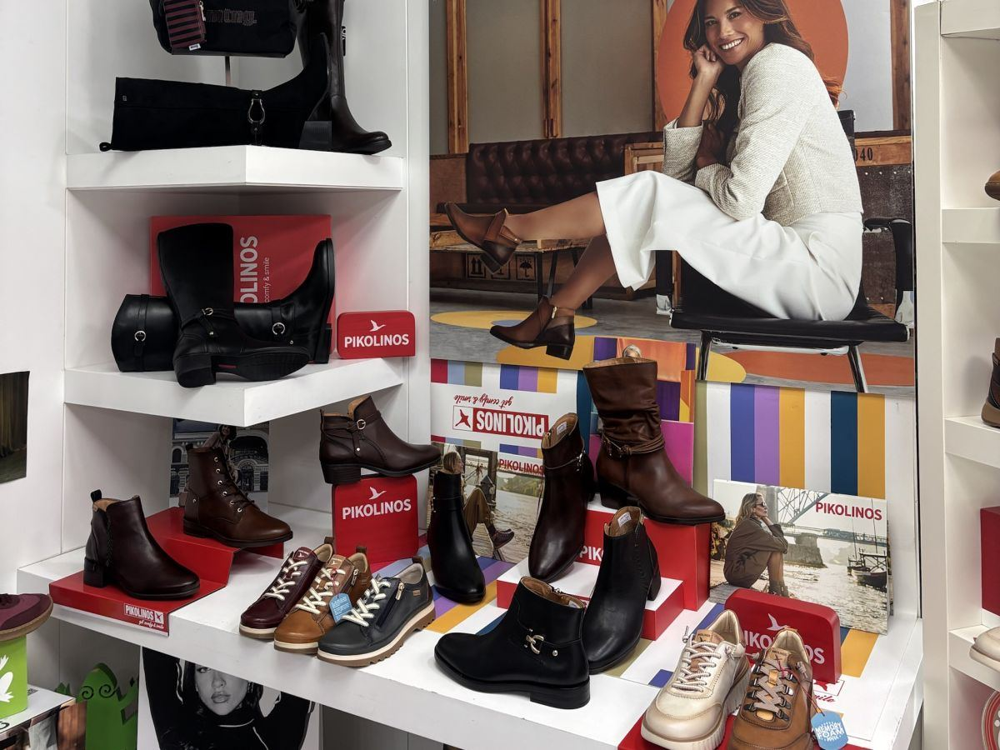
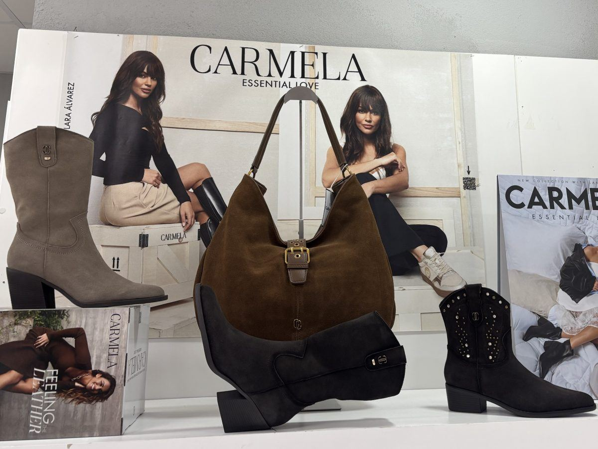
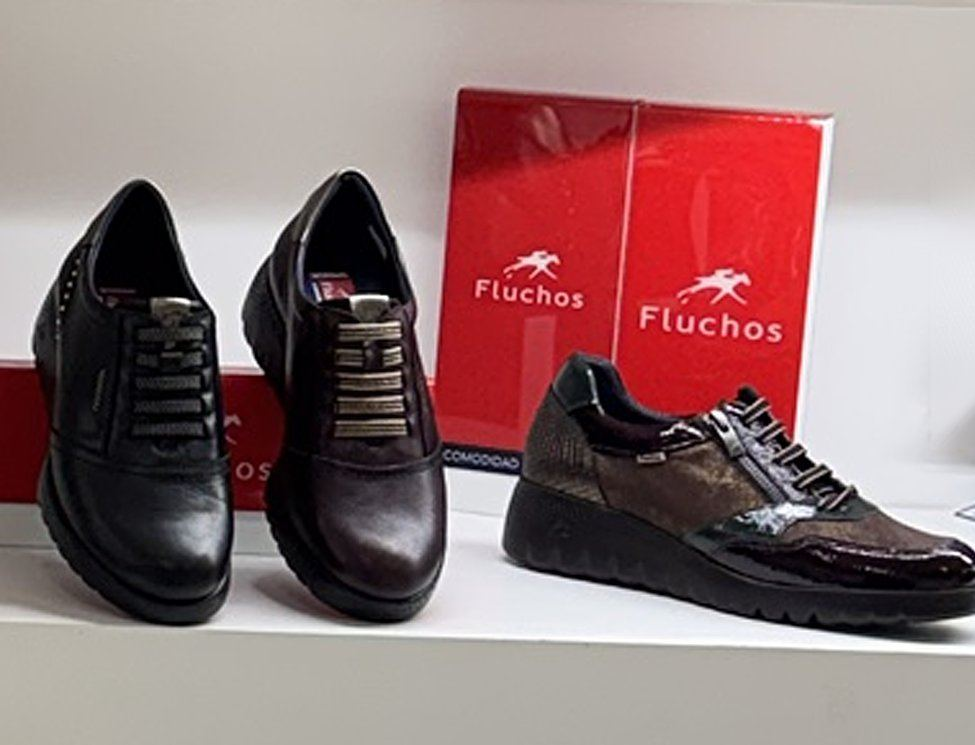
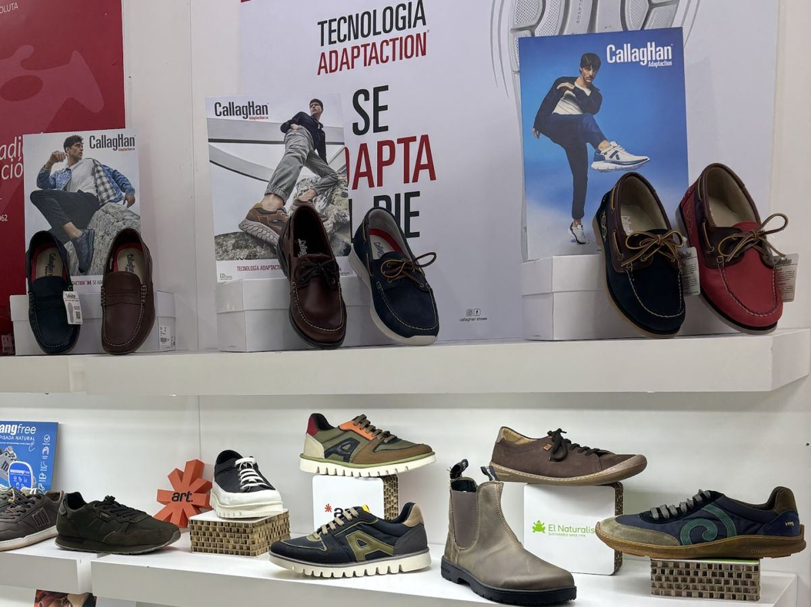
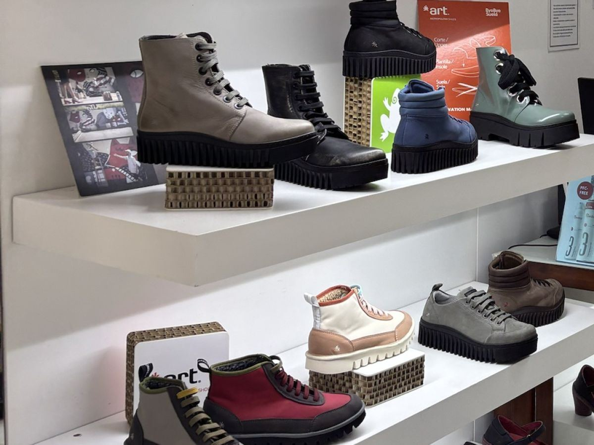
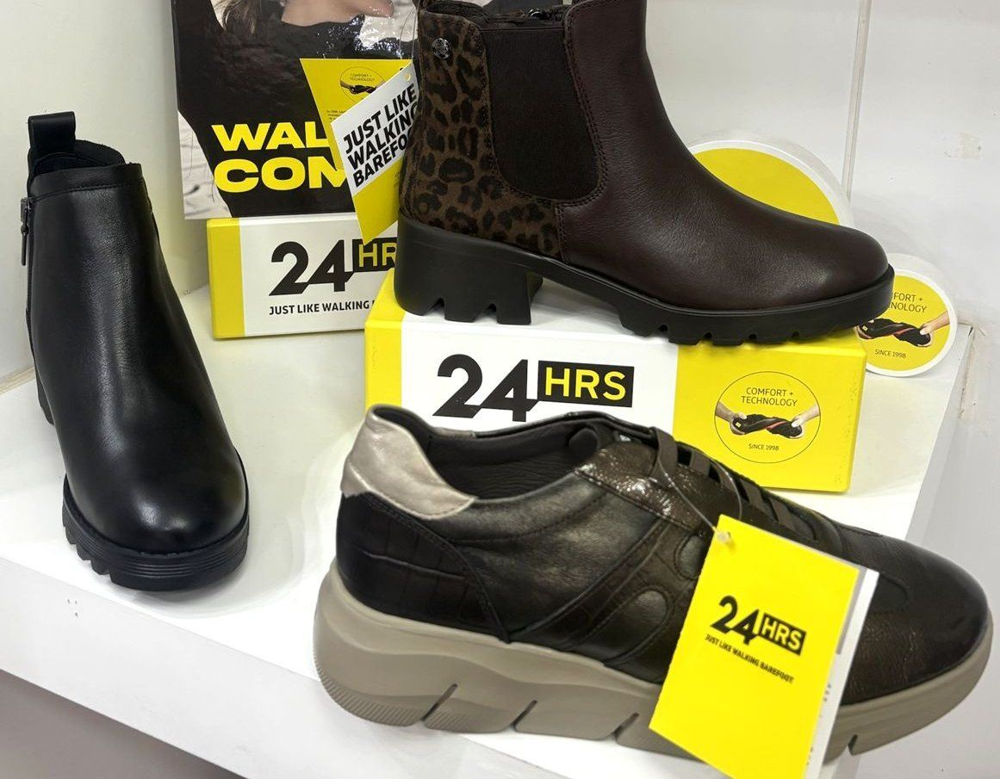
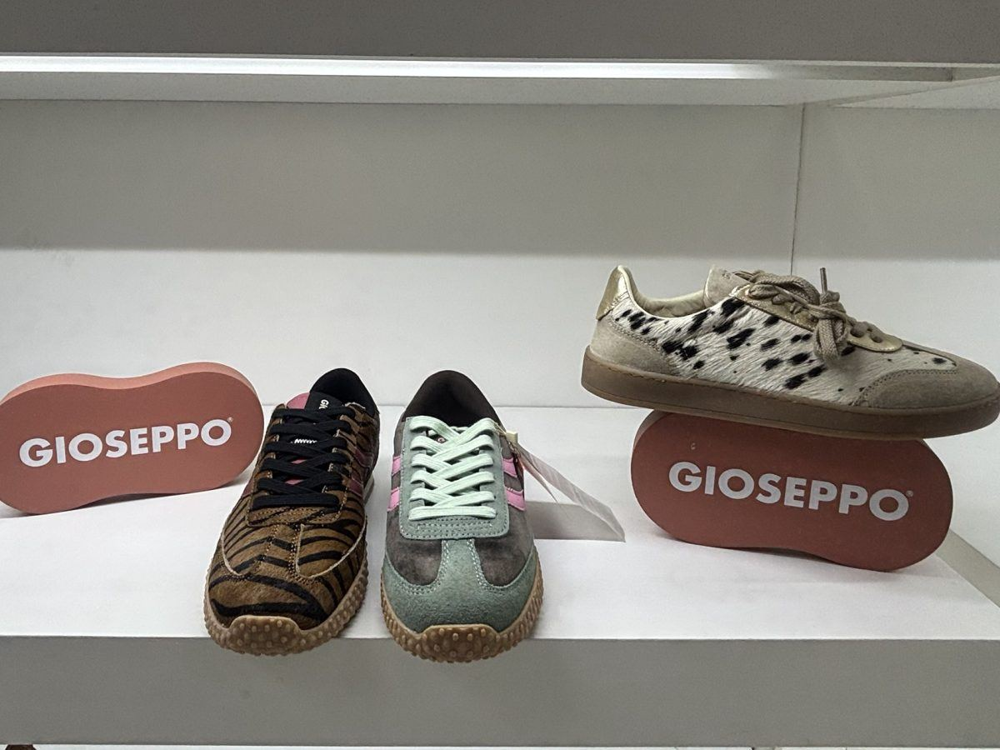
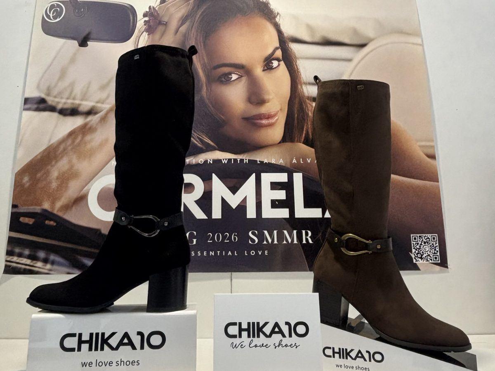
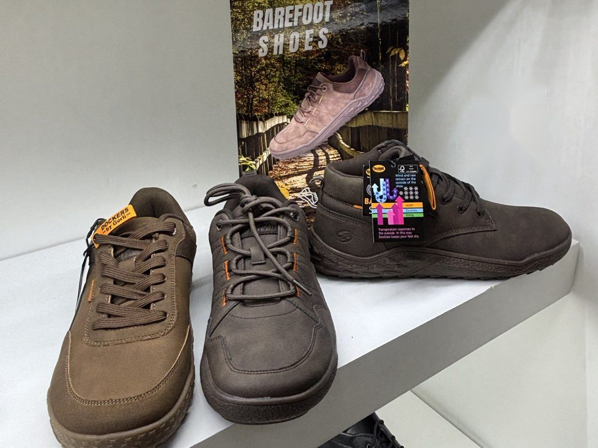

Da gusto entrar. La atención siempre de 10.
Gran variedad de marcas y diferentes estilos. Calidad precio, inmejorable.
Nos recomendó unos zapatos adaptados para la tercera edad que le vienen muy bien.

Visítanos
C/ Compañía, 2
11005 Cádiz · Teléfono 856 36 72 27
WhatsApp 628 83 47 44
| Lunes a viernes | 10:30–14:00 · 17:30–20:30 |
| Sábado | 10:30–14:00 |
| Domingo | Cerrado |
Marcas
Nuestras marcas en tienda
Trabajamos con marcas de calidad, muchas de ellas fabricadas en España. Así las tenemos en la tienda.









Todas nuestras marcas
De la A a la Z. Pulsa una para ver sus modelos.
Inicio › Aviso legal y privacidad
Aviso legal
En cumplimiento de la Ley 34/2002, de Servicios de la Sociedad de la Información y de Comercio Electrónico (LSSI-CE), se informa de los datos del titular de esta web:
- Titular: Cristina Porfirio Bruzón
- NIF: 31262350Z
- Nombre comercial: Zapatos Cristina
- Domicilio: C/ Compañía, 2 · 11005 Cádiz
- Teléfono: 856 36 72 27 · WhatsApp: 628 83 47 44
- Correo electrónico: crisporfirio70@gmail.com
Esta web es un escaparate informativo de la tienda. No se venden productos a través de ella: los precios son orientativos y pueden cambiar sin previo aviso. La disponibilidad de tallas y colores se confirma en tienda, por teléfono o por WhatsApp.
Los textos, fotografías y diseño de esta web son de Zapatos Cristina, salvo las marcas y logotipos de los fabricantes, que pertenecen a sus propietarios. No se permite copiarlos sin autorización.
Zapatos Cristina no se hace responsable del contenido de las webs externas a las que se enlaza (Google Maps, WhatsApp, Instagram, Facebook).
Política de privacidad
Responsable: Cristina Porfirio Bruzón (Zapatos Cristina), C/ Compañía, 2 · 11005 Cádiz · crisporfirio70@gmail.com.
Qué datos tratamos: esta web no tiene formularios ni registro de usuarios. Solo tratamos los datos que nos facilites tú mismo si nos escribes por WhatsApp, correo electrónico o nos llamas (nombre, teléfono y el contenido de tu consulta).
Para qué: únicamente para responder a tu consulta y, si lo pides, avisarte cuando llegue un modelo o una talla.
Base legal: tu consentimiento al ponerte en contacto con nosotros.
Cuánto tiempo: el necesario para atender tu consulta. Después se eliminan, salvo que la ley obligue a conservarlos.
Destinatarios: no cedemos tus datos a nadie. Si usas el botón de WhatsApp, la conversación pasa por WhatsApp (Meta), que tiene su propia política de privacidad.
Tus derechos: puedes pedir acceder a tus datos, corregirlos, borrarlos, limitar u oponerte a su uso y su portabilidad escribiendo a crisporfirio70@gmail.com. Si crees que no se han respetado tus derechos, puedes reclamar ante la Agencia Española de Protección de Datos (www.aepd.es).
Cookies
Esta web no utiliza cookies propias ni de terceros, ni herramientas de publicidad o de seguimiento. Por eso no te mostramos ningún aviso de cookies.
Última actualización: noviembre de 2026.
Tipo de zapato
Marca